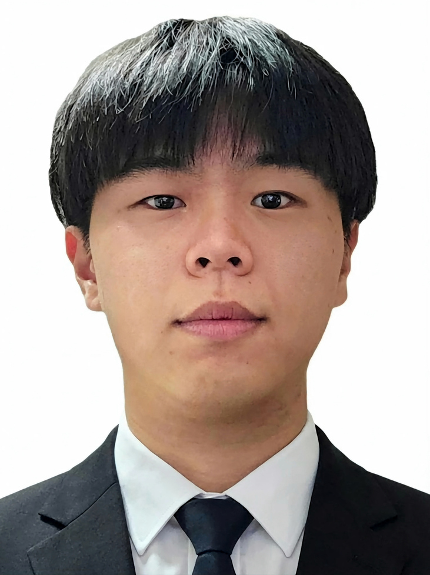

SEO SUHYEON
@SeoSuHyeon1213 · 서수현
✦ XR · Game · Media Art
영상·XR·미디어아트 제작 과정을 이해하는 실무형 개발 / 기획 — 아이디어를 기획부터 제작·전시까지 직접 완성합니다.
강점
기획부터 제작·전시까지 직접 경험
Unity, Unreal Engine, Figma 등을 활용해 요구사항과 피드백을 구체적인 제작 항목으로 정리합니다.
게임 × 미디어아트 융합
게임 개발 경험을 미디어아트에 접목해 관객 반응형 인터랙티브 콘텐츠를 전시했습니다.
학력 사항
한국폴리텍대학 광명 캠퍼스
증강현실시스템학과 · 재학 중
2026.03 —
유원대학교 아산 캠퍼스
미디어콘텐츠학과 · 졸업
~ 2026.02
경력 · 전시
버넥트(VIRNECT) 미래내일 일경험
UI/UX 디자인 · Figma
2026.06–07
Blooming Nature 전시
안산문화재단 지원 · 인터랙션 미디어아트
2026.06
미디어아트 담다 전시
인천아트플랫폼 지원 · Blender, AE
2025.04–05
공연 기획
아산문화재단 지원 · 음향, 녹화, 편집
2023–2025
포트폴리오
SNS · 연락처